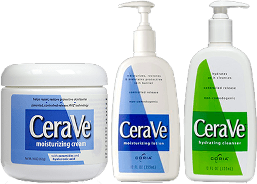

CeraVe es la marca #1 recomendada por dermatólogos en hidratación.
No importa si necesitas productos para piel sensible, con tendencia acnéica,
mixta o normal, si necesita un producto calmante para la piel de su bebé o
patologías como eczema, psoriasis o solo quiere un sérum hidratante o una
crema anti-edad, CeraVe lo puede ayudar.

LA DIFERENCIA DE CERAMIDAS
Todos los productos de CeraVe contienen 3 ceramidas esenciales que son lípidos que forman la barrera
protectora de la piel y ayudan a retener la humedad.
La piel contiene naturalmente ceramidas que pueden perderse con el tiempo,
contribuyendo a la resequedad e irritación. Reponer los niveles de ceramidas
ayuda a restaurar la barrera cutánea, sellando la humedad y evitando las
impurezas y los irritantes.